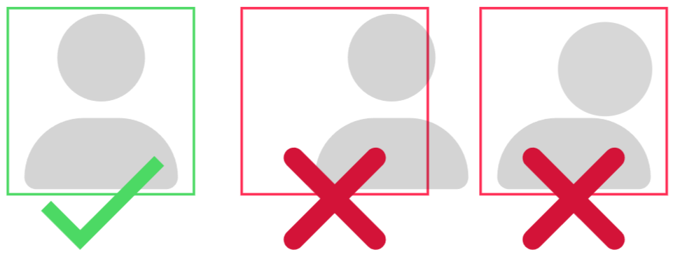
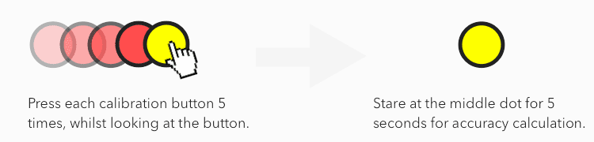

×
Help Information
Tip 1
During calibration, make sure your face is centered on the camera and your head is relatively stable.

Tip 2
Find the calibration buttons within the image. Press each button 5 times while looking at it. Repeat until the Calibration process is completed.
